Bills et al. — 2023 · Steven Bills, Nick Cammarata, Dan Mossing, Henk Tillman, Leo Gao, Gabriel Goh, Ilya Sutskever, Jan Leike, Jeff Wu, William Saunders
| Priority | ○ P1 — Important |
| Section | C — Superposition and sparse autoencoders |
| Source | https://openaipublic.blob.core.windows.net/neuron-explainer/paper/index.html (OpenAI) |
| Licence | No explicit licence published on openaipublic.blob.core.windows.net |
| Print anthology | pages 507–549 (cover 507, text 508–549) |
Why read this. Automates neuron explanation: GPT-4 writes explanations of GPT-2 XL neurons, scored by how well a simulator predicts activations from the explanation alone.
Reading focus. The explain–simulate–score loop, what share of neurons score well and how it varies with depth and model size, and the stated limits of simulation-based scoring.
In context. The first automated-interpretability pipeline; its explain-and-simulate scoring is the yardstick 16 and 17 adapt to show dictionary features beat neurons. 25 keeps an automated-interpretability metric, and 37, by one of this paper's authors, argues simulation scores understated how interpretable neurons are.
← 13 Composition & Superposition · Contents · 15 Finding Neurons in a Haystack →
Text extracted automatically from the source PDF. Display equations, figures and some tables appear as images; inline mathematics may be garbled — the PDF is authoritative.
AUTHORS
Steven Bills ∗ , Nick Cammarata ∗ , Dan Mossing ∗ , Henk Tillman ∗ , Leo Gao ∗ , Gabriel Goh, Ilya Sutskever, Jan Leike, Jeff Wu ∗ , William Saunders ∗
AFFILIATION
OpenAI
PUBLISHED
May 9, 2023
Language models have become more capable and more widely deployed, but we do not understand how they work. Recent work has made progress on understanding a small number of circuits and narrow behaviors, [1] [2] but to fully understand a language model, we'll need to analyze millions of neurons. This paper applies automation to the problem of scaling an interpretability technique to all the neurons in a large language model. Our hope is that building on this approach of automating interpretability [3] [4] [5] will enable us to comprehensively audit the safety of models before deployment.
Our technique seeks to explain what patterns in text [6] [7] cause a neuron to activate. It consists of three steps:
Step 1 Explain the neuron's activations using GPT-4
Show neuron activations to GPT-4:
The Avengers to the big screen , J oss Whedon has returned to reunite Marvel ' s gang of superheroes for their toughest challenge yet. Avengers : Age of Ultron pits the titular heroes against a sentient artif i cial intelligence, and smart money says that it could soar at the box of fi ce to be the highest-grossing f i lm of the
introduction into the Marvel cinematic universe, it' s possible, though Marvel Studios boss Kevin Feige told Entertainment Weekly that, "Tony is earthbound and facing earthbound villains . You will not f i nd magic power rings f i ring ice and f l ame beams ." Spo il sport! But he does hint that they have some use… STARK T
, which means this Nightwing movie is probably not about the guy who used to own that suit. So, unless new director Matt Reeves ' The Batman is going to dig into some of this backstory or introduce the Dick Grayson character i n his movie, the Nightwing movie is going to have a lot of work to do explaining
of Avengers who weren' t i n the movie and also Thor try to f i ght the inf i nitely powerful Magic Space Fire Bird. It ends up being completely pointless, an embarrassing loss, and I 'm pretty sure Thor accidentally destroys a planet. That's right. I n an efort f to save Earth, one of the heroes inadvertantly blows up an
GPT-4 gives an explanation, guessing that the neuron is activating on
references to movies, characters, and entertainment.
Step 2 Simulate activations using GPT-4, conditioning on the explanation Step 3 Score the explanation by comparing the simulated and real activations
Select a neuron: Marvel comics vibes
Layer 0 neuron 816: language related to Marvel comics, movies, and characters, as well as other superhero-themed content
This technique lets us leverage GPT-4 [8] to define and automatically measure a quantitative notion of interpretability [9] [10] which we call an “explanation score”: a measure of a language model's ability to compress and reconstruct neuron activations using natural language. [11] . The fact that this framework is quantitative allows us to measure progress toward our goal of making the computations of a neural network understandable to humans.
With our baseline methodology, explanations achieved scores approaching the level of human contractor performance. We found we could further improve performance by:
Iterating on explanations. We asked GPT-4 to come up with possible counterexamples, and to then revise explanations in light of their activations.
Using more capable models to give explanations. The average score goes up as the explainer model's capability increases, with GPT-4 achieving the highest scores.
Using more capable models to simulate activations conditional on an explanation. Both the average score and the agreement between scores and human comparisons go up as the simulator model's capability increases, with GPT-4 achieving the highest scores.
However, we found that both GPT-4-based and human contractor explanations still score poorly in absolute terms. When looking at neurons, we also found the typical neuron appeared quite polysemantic. This suggests we should change what we're explaining. In preliminary experiments, we tried:
Changing the architecture of the explained model. We achieved higher explanation scores on models trained with different activation functions. [12]
Searching for more explainable directions. Our preliminary investigation into direct optimization of scores shows that we can find some well-explained linear combinations of neurons.
We applied our method to all MLP neurons in GPT-2 XL. [13] We found over 1,000 neurons with explanations that scored at least 0.8, meaning that according to GPT-4 they account for most of the neuron's top-activating behavior. We used these explanations to build new user interfaces for understanding models, [14] [15] [16] for example allowing us to quickly see which neurons activate on a particular dataset example and what those neurons do.
Many of our readers may be aware that Japanese consumers are quite fond of unique and creative Kit Kat products and flavors. But now, Nestle Japan has come out with what could be described as not just a new flavor but a new "species" of Kit Kat. And why are we calling it a new species? Well, it's because you'll need to do just a little bit of cooking to fully enjoy these Kit Kats.
Click a token to see which neurons fire
We are open sourcing our dataset of explanations for all neurons in GPT-2 XL, code for explanation and scoring to encourage further research in both producing better explanations. We are also releasing a neuron viewer using the dataset. Although most well-explained neurons are not very interesting, we found many interesting neurons that GPT-4 didn't understand. We hope this lets others more easily build on top of our work. With better explanations and tools in the future, we may be able to rapidly uncover interesting qualitative understanding of model computations.
Our methodology involves multiple language models:
The subject model is the model that we are attempting to interpret.
The explainer model comes up with hypotheses about subject model behavior. 1
The simulator model makes predictions based on the hypothesis. Based on how well the predictions match reality, we can judge the quality of the hypothesis. The simulator model should interpret hypotheses the same way an idealized human would. 2
In this paper we start with the easiest case of identifying properties of text inputs that correlate with intermediate activations. [17] [18] [19] We ultimately want to extend our method to explore arbitrary hypotheses about subject model computations.
In the language model case, the inputs are text passages. For the intermediate activations, we focus on neurons in the MLP layers. For the remainder of this paper, activations refer to the MLP post-activation value calculated as a = f( Win ⋅ x + b ) , where f is a nonlinear activation function (specifically GELU [20] for GPT-2). The neuron activation is then used to update the residual stream by adding a ⋅ Wout .
When we have a hypothesized explanation for a neuron, the hypothesis is that the neuron activates on tokens with that property, where the property may include the previous tokens as context.
At a high level, our process of interpreting a neuron uses the following algorithm:
Explain: Generate an explanation of the neuron’s behavior by showing the explainer model (token, activation) pairs from the neuron’s responses to text excerpts
Simulate: Use the simulator model to simulate the neuron's activations based on the explanation
Score: Automatically score the explanation based on how well the simulated activations match the real activations
We always use distinct documents for explanation generation and simulation. 3
Our code for generating explanations, simulating neurons, and scoring explanations is available here.
In this step, we create a prompt that is sent to the explainer model to generate one or more explanations of a neuron's behavior. The prompt consists of few-shot examples of other real neurons, with tab-separated (token, activation) pairs from text excerpts and researcher-written explanations. Finally, the few-shot example contains tab-separated (token, activation) pairs from text excerpts for the neuron being interpreted. 4
Click to show abbreviated version of the explanation generation prompt
Activations are normalized to a 0-10 scale and discretized to integer values, with negative activation values mapping to 0 and the maximum activation value ever observed for the neuron mapping to 10. For sequences where the neuron's activations are sparse (<20% non-zero), we found it helpful to additionally repeat the token/activation pairs with non-zero activations after the full list of tokens, helping the model to focus on the relevant tokens.
With this method, we aim to answer the question: supposing a proposed explanation accurately and comprehensively explains a neuron's behavior, how would that neuron activate for each token in a particular sequence? To do this, we use the simulator model to simulate neuron activations for each subject model token, conditional on the proposed explanation.
We prompt the simulator model to output an integer from 0-10 for each subject model token. For each predicted activation position, we examine the probability assigned to each number ("0", "1", …, "10"), and use those to compute the expected value of the output. The resulting simulated neuron value is thus on a [0, 10] scale.
Our simplest method is what we call the "one at a time" method. The prompt consists of some few-shot examples and a single-shot example of predicting an individual token's activation.
Unfortunately, the "one at a time" method is quite slow, as it requires one forward pass per simulated token. We use a trick to parallelize the probability predictions across all tokens by having few-shot examples where activation values switch from being "unknown" to being actual values at a random location in the sequence. This way, we can simulate the neuron with "unknown" in the context while still eliciting model predictions by examining logprobs for the "unknown" tokens, and without the model ever getting to observe any actual activation values for the relevant neuron. We call this the "all at once" method.
Due to the speed advantage, we use "all at once" scoring for the remainder of the paper, except for some of the smaller-scale qualitative results. 5 In addition to being faster, we surprisingly found scores computed using the "all at once" method to be as accurate as the "one at a time" method at predicting human preferences between explanations. 6
Conceptually, given an explanation and simulation strategy, we now have a simulated neuron, a "neuron" for which we can predict activation values for any given text excerpt. To score an explanation, we want to compare this simulated neuron against the real neuron for which the explanation was generated. That is, we want to compare two lists of values: the simulated activation values for the explanation over multiple text excerpts, and the actual activation values of the real neuron on the same text excerpts.
A conceptually simple approach is to use explained variance of the true activations by the simulated activations, E t [( s ( t )− a ( t ))2] across all tokens. That is, we could calculate 1 − Var t ( a ( t )) , where s ( t ) indicates the simulated activation given the explanation, and a ( t ) indicates the true activation, and expectations are across all tokens from the chosen text excerpts. 7
However, our simulated activations are on a [0, 10] scale, while real activations will have some arbitrary distribution. Thus, we assume the ability to calibrate the simulated neuron's activation distribution to the actual neuron's distribution. We chose to simply calibrate linearly 8 on the text excerpts being scored with. 9 If ρ is the correlation coefficient between the true and simulated activations, then we scale simulations so their mean matches that of the true activations, and their standard deviation is ρ times the standard deviation of the true activations. This maximizes explained variance at ρ210 .
This motivates our main method of scoring, correlation scoring, which simply reports . ρ Note then that if the simulated neuron behaves identically to the real neuron, the score is 1. If the simulated neuron behaves randomly, e.g. if the explanation has nothing to do with the neuron behavior, the score will tend to be around 0.
Another way to understand a network is to perturb its internal values during a forward pass and observe the effect. [21] [22] [10] This suggests a more expensive approach to scoring, where we replace the real neuron with the simulated neuron (i.e. ablate its activations to simulated activation values) and check whether the network behavior is preserved.
To measure the extent of the behavioral change from ablating to simulation, we use Jensen-Shannon divergence between the perturbed and original model’s output logprobs, averaged across all tokens. As a baseline for comparison, we perform a second perturbation, ablating the neuron’s activation to its mean value across all tokens. For each neuron, we normalize the divergence of ablating to simulation by the divergence of E x [AvgJSD( m ( x , n = s ( x )))∣∣ m ( x ))] ablating to the mean. Thus, we express an ablation score as 1 − E x [AvgJSD( m ( x , n = μ )∣∣ m ( x ))] , where m ( x , n = …) indicates running the model over the text excerpt x with the neuron ablated and returning a predicted distribution at each token, AvgJSD takes the Jensen-Shannon divergences at each token and averages them, s ( x ) is the linearly calibrated vector of simulated neuron values on the sequence, and μ is the average activation for that neuron across all tokens. Note that for this ablation score, as for the correlation score, chance performance results in a score of 0.0, and perfect performance results in a score of 1.0.
Random Only Scoring Top And Random Scoring
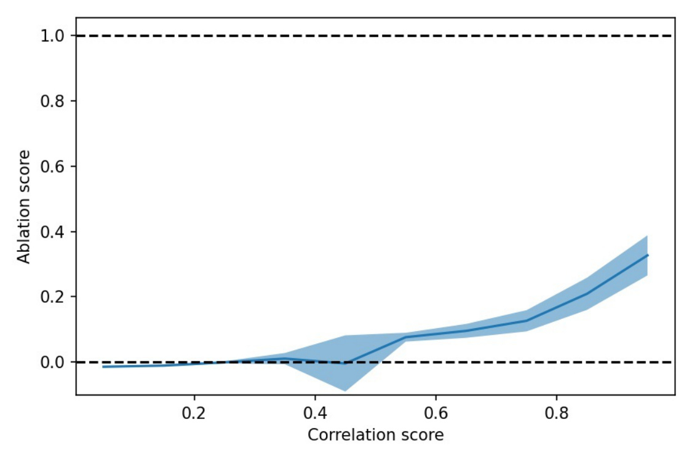
We find that correlation scoring and ablation scoring have a clear relationship, on average. Thus, the remainder of the paper uses correlation scoring, as it is much simpler to compute. Nevertheless, correlation scoring appears not to capture all the deficits in simulated explanations revealed by ablation scoring. In particular, correlation scores of 0.9 still lead to relatively low ablation scores on average (0.3 for scoring on random-only text excerpts and 0.6 for top-and-random; see below for how these text excerpts are chosen). 11
One potential worry is that simulation-based scoring does not actually reflect human evaluation of explanations (see here for more discussion). We gathered human evaluations of explanation quality to see whether they agreed with score-based assessment.
We gave human labelers tasks where they see the same text excerpts and activations (shown with color highlighting) as the simulator model (both top-activating and random), and are asked to rate and then rank 5 proposed explanations based on how well those explanations capture the activation patterns. We found the explainer model explanations were not diverse, and so increased explanation diversity by varying the few-shot examples used in the explanation generation prompt, or by using a modified prompt that asks the explainer model for a numbered list of possible explanations in a single completion.
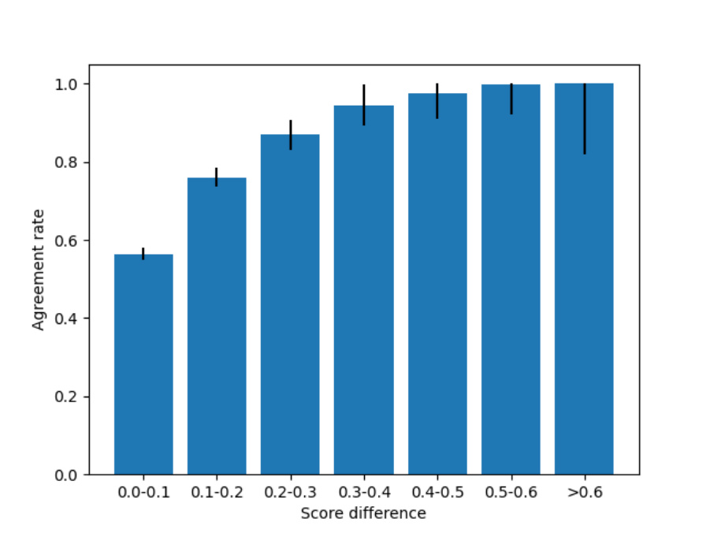
Our results show that humans tend to prefer higher-scoring explanations over lower-scoring ones, with the consistency of that preference increasing as the size of the score gap increases.
Throughout this work, unless otherwise specified, we use GPT-2 pretrained models as subject models and GPT-4 for the explainer and simulator models. 12
For both generating and simulating explanations, we take text excerpts from the training split of the subject model's pre-training dataset (e.g. WebText, for GPT-2 models). We choose random 64-token contiguous subsequences of the documents as our text excerpts. 13 , formatted identically to how the models were trained, with the exception that we never cross document boundaries. 14
When generating explanations, we use 5 "top-activating" text excerpts, which have at least one token with an extremely large activation value, as determined by the quantile of the max activation. This was because we found empirically that:
Exclusively using top-activating sequences in the explanation generation prompt yielded the best explanation scores, even when scoring only against random sequences or against sequences with activations in lower quantiles (see figure below). In fact, we found noticeable gains even going from top 1 in 20,000 to top 1 in 60,000 text excerpts.
Explanation scores were highest when using 16-64 token text excerpts, even when the sequences used for scoring were longer.
Using more than 5-10 text excerpts for explanation generation does not significantly affect scores (though there is some interaction with sequence length).
Including examples of random or lower-quantile sequences in the explanation generation prompt reduced explanation scores.
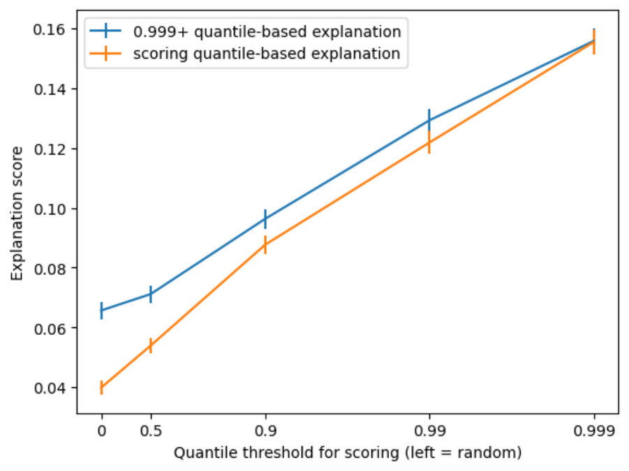
Thus, for the remainder of this paper, explanations are always generated from 5 top-activating sequences unless otherwise noted. We set a top quantile threshold of 0.9996, taking the 20 sequences containing the highest activations out of 50,000 total sequences. We sample explanations at temperature 1.
For simulation and scoring, we report on 5 uniformly random text excerpts ("random-only"). The random-only score can be thought of as an explanation’s ability to capture the neuron’s representation of features in the pretraining distribution. While random-only scoring is conceptually easy to interpret, we also report scores on a mix of 5 top-activating and 5 random text excerpts ("top-and-random"). The top-and-random score can be thought of as an explanation’s ability to capture the neuron’s most strongly represented feature (from the top text excerpts), with a penalty for overly broad explanations (from the random text excerpts). Top-and-random scoring has several pragmatic advantages over random-only:
Random text excerpts cause significantly higher variance scores. Empirically, we found that neurons which do well on random-only scoring are dense-activating neurons. Most neurons are quite sparse, and while means across large numbers of neurons are likely to be informative, individual neuron scores are generally uninformative.
Given polysemanticity, [25] [26] neurons could need extremely long/disjunctive explanations. Even a neuron that corresponds to one feature could have substantial interference from other features. Explaining only the behavior at the extremes seemed like a reasonable way to get cleaner features, which may be more analogous to what we hope to be explaining in the long run.
We wanted to be able to score on adversarially chosen text excerpts, e.g. for our explanation revisions. It was more challenging to do this while maintaining the uniform-over-pre-training interpretation. 16
Furthermore, a perfect correlation (or explained variance) of 1 still has a similar interpretation.
Note that "random-only" scoring with small sample size risks failing to capture behavior, due to lacking both tokens with high simulated activations and tokens with high real activations. "Top-and-random" scoring addresses the latter, but causes us to penalize falsely low simulations more than falsely high simulations, and thus tends to accept overly broad explanations. A more principled approach which gets the best of both worlds might be to stick to random-only scoring, but increase the number of random-only text excerpts in combination with using importance sampling as a variance reduction strategy. 17
Below we show some prototypical examples of neuron scoring.
Prev
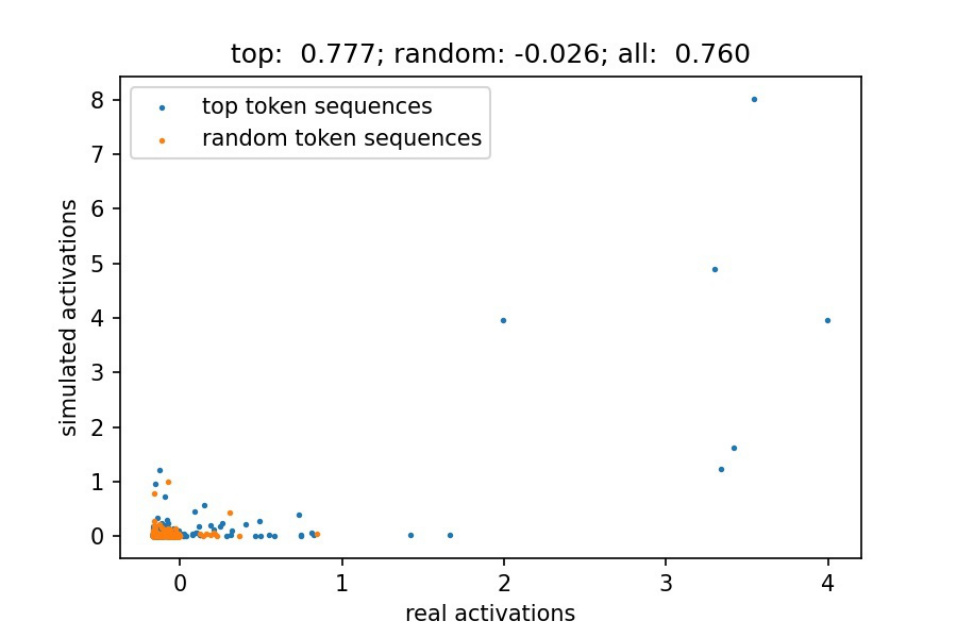
Next
a neuron with a particularly good top-and-random score, but bad random-only score, due to behavior in the low-activation regime
Notes on interpretation: Throughout this section, our results may be obtained using slightly differing methodologies (e.g. different explainer models, different prompts, etc.). Thus scores are not always comparable across graphs. In all plots, error bars correspond to a 95% confidence interval for the mean. 18
Overall, for GPT-2, we find an average score of 0.151 using top-and-random scoring, and 0.037 for random-only scoring. Scores generally decrease when going to later layers.
Layer 0
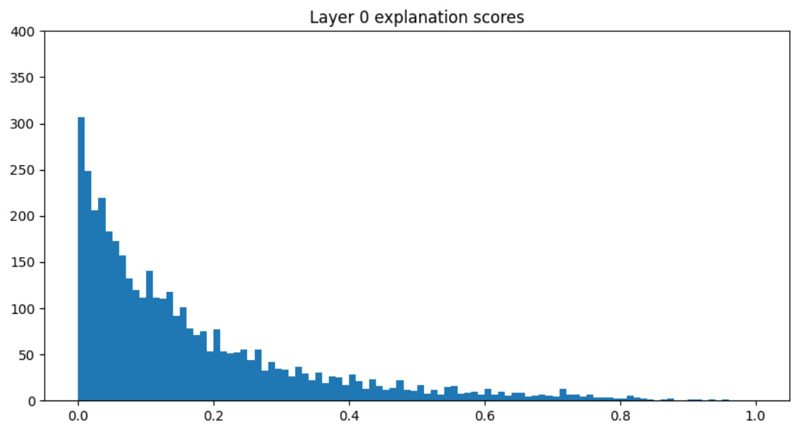
Note that individual scores for neurons may be noisy, especially for random-only scoring. With that in mind, out of a total of 307,200 neurons, 5,203 (1.7%) have top-and-random scores above 0.7 (explaining roughly half the variance), using our default methodology. With random-only scoring, this drops to 732 neurons (0.2%). Only 189 neurons (0.06%) have top-and-random scores above 0.9, and 86 (0.03%) have random-only scores above 0.9.
To understand the quality of our explanations in absolute terms, it is helpful to compare with a baseline that does not depend on language models' ability to summarize or simulate activations. For this reason, we examine several baseline methods that directly predict activation based on a single token, using either model weights, or activation data aggregated across held out texts. For each neuron, these methods give one predicted activation value per token in the vocabulary, which amounts to substantially more information than the short natural language explanation produced by a language model. For that reason, we also used language models to briefly summarize these lists of activation values, and used that as an explanation in our typical simulation pipeline.
Click to show abbreviated token explanation prompt
The logit lens and related techniques [28] [29] relate neuron weights to tokens, to try to interpret neurons in terms of tokens that cause them to activate, or tokens that the neuron causes the model to sample. Fundamentally, these techniques depend on multiplying the input or output weights of a neuron by either the embedding or unembedding matrix.
To linearly predict activations for each token, we multiply each token embedding by the pre-MLP layer norm gain and neuron input weights ( Win ). This methodology allows for a single scalar value to be assigned to each token in the vocabulary. The predicted activation with this method depends only on the current token and not on the preceding context. These scalar values are used directly to predict the activation for each token, with no summarization. These weight-based linear predictions are mechanistic or “causal” explanations in that the weights directly affect the neuron’s pattern of inputs, and thus its pattern of activations.
The linear token-based prediction baseline outperforms activation-based explanation and scoring for the first layer, predicting activations almost perfectly (unsurprising given that only the first attention layer intervenes between the embedding and first MLP layer). For all subsequent layers, GPT-4-based explanation and scoring predicts activations better than the linear token-based prediction baseline. 19
The linear token-based prediction baseline is a somewhat unfair comparison, as the "explanation length" of one scalar value per token in the vocabulary is substantially longer than GPT-based natural language explanations. Using a language model to compress this information into a short explanation and simulate that explanation might act as an “information bottleneck” that affects the accuracy of predicted activations. To control for this, we try a hybrid approach, applying GPT-4-based explanation to the list of tokens with the highest linearly predicted activations (corresponding to 50 out of the top 100 values), rather than to top activations. These explanations score worse than either linear token-based prediction or activation-based explanations.
Random Only Scoring Top And Random Scoring
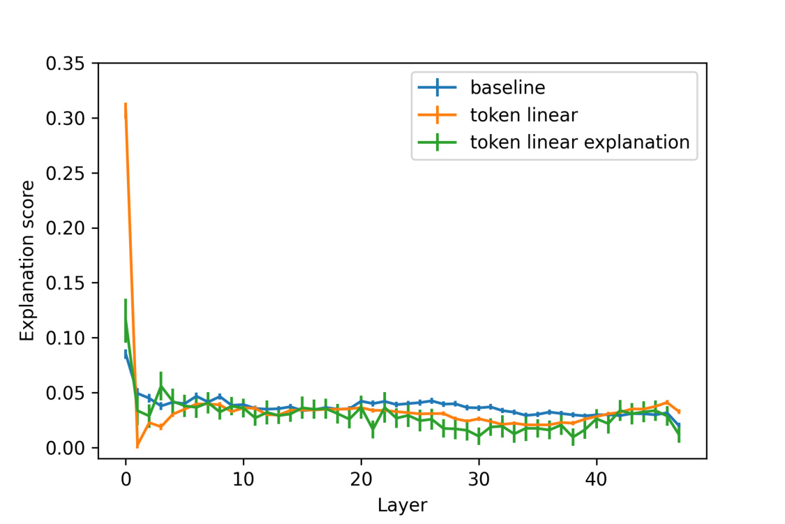
The token-based linear prediction baseline might underperform the activation-based baseline for one of several reasons. First, it might fail because multi-token context is important (for example, many neurons are sensitive to multiple-token phrases). Second, it might fail because intermediate processing steps between the token embedding and Win are important, and the linear prediction is a poor representation of the true causal impact of a token on a neuron's activity.
To evaluate the second possibility, we construct a second, “correlational” baseline. For this baseline, we compute the mean activation per-token and per-neuron over a large corpus of held-out internet text. We then use this information to construct a lookup table. For each token in a text excerpt and for each neuron, we predict the neuron's activation using the token lookup table, independent of the preceding tokens. Again, we do not summarize the contents of this lookup table, or use a language model to simulate activations.
The token lookup table baseline is much stronger than the token-based linear prediction baseline, substantially outperforming activation-based explanation and simulation on average. We apply the same explanation technique as with the token-based linear baseline to measure how the information bottleneck from explanation and simulation using GPT-4 affects the accuracy of predicted activations.
The resulting token lookup table-based explanation results in a score similar to our activation-based explanation on top-and-random scoring, but outperforms activation-based explanations on random-only scoring. However, we are most interested in neurons that encode complex patterns of multi-token context rather than single tokens. Despite worse performance on average, we find many interesting neurons where activation-based explanations have an advantage over token-lookup-table-based explanations. We are also able to improve over the token-lookup-table-based explanation by revising explanations. In the long run, we plan to use methods that combine both token-based and activation-based information.
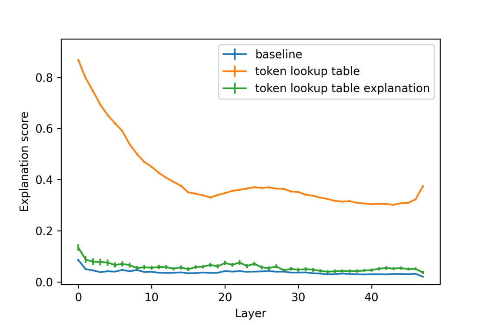
We noticed that some neurons appear to encode the predicted next token rather than the current token, particularly in later layers (see the “from”-predicting neuron described below). Our baseline methodology, which prompts GPT-4 with (preceding token, activation) pairs, is unable to capture this behavior. As an alternative, we prompt GPT-4 to explain and simulate the neuron’s activations based on the tokens following its highest activations by using (next token, activation) pairs instead. This approach is more successful for a subset of neurons, particularly in later layers, and achieves similar scores on average to the baseline method in the last few layers.
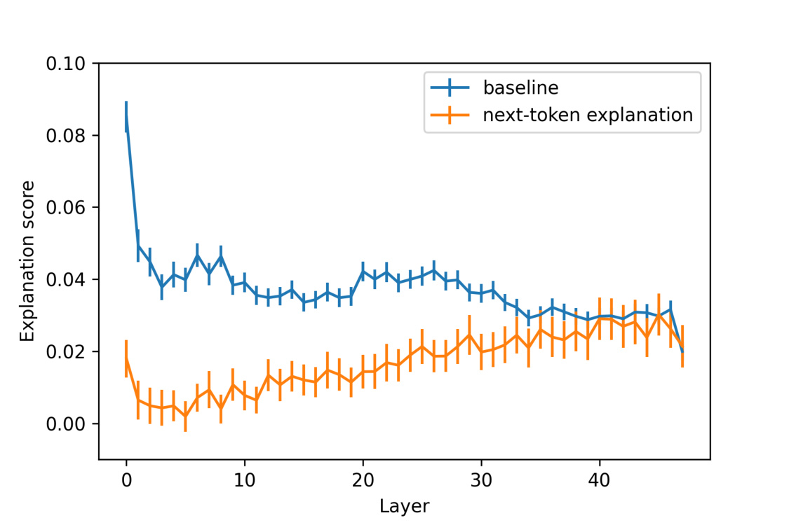
Explanation quality is fundamentally bottlenecked by the small set of text excerpts and activations shown in a single explanation prompt, which is not always sufficient to explain a neuron's behavior. Iterating on explanations [7] would potentially let us leverage more information effectively, relying on the emergent ability of large language models to use reasoning to improve responses at test time. [30] [31]20
One particular issue we find is that overly broad explanations tend to be consistent with the top-activating sequences. For instance, we found a "not all" neuron which activates on the phrase "not all" and some related phrases. However, the top-activating text excerpts chosen for explanation do not falsify a simpler hypothesis, that the neuron activates on the phrase "all". The model thus generates an overly broad explanation: 'the term "all" along with related contextual phrases'. 21 Nevertheless, observing activations for text excerpts containing "all" in different contexts reveals that the neuron is actually activating for "all", but only when part of the phrase "not all". From this example and other similar examples we concluded that sourcing new evidence beyond the top and random activation sequences would be helpful for more fully explaining some neurons.
To make things worse, we find that our explainer technique often fails to take into account negative evidence (i.e. examples of the neuron not firing which disqualify certain hypotheses). With the "not all" neuron, even when we manually add negative evidence to the explainer context (i.e. sequences that include the word "all" with zero activation), the explainer ignores these and produces the same overly broad explanation. The explainer model may be unable to pay attention to all facets of the prompt in a single forward pass.
To address these issues, we apply a two-step revision process.
The first step is to source new evidence. We use a few-shot prompt with GPT-4 to generate 10 sentences which match the existing explanation. For instance, for the "not all" neuron, GPT-4 generates sentences which use the word "all" in a non-negated context.
Click to show sentence generation prompt
The hope is to find false positives for the original explanation, i.e. sentences containing tokens where the neuron's real activation is low, but the simulated activation is high. However, we do not filter generated sentences for this condition. In practice, roughly 42% of generated sequences result in false positives for their explanations. For 86% of neurons at least one of the 10 sequences resulted in a false positive. This provides an independent signal that our explanations are often too inclusive. We split the 10 generated sentences into two sets: 5 for revision and 5 for scoring. Once we have generated the new sentences, we perform inference using the subject model and record activations for the target neurons.
The second step is to use a few-shot prompt with GPT-4 to revise the original model explanation. The prompt includes the evidence used to generate the original explanation, the original explanation, the new generated sentences, and the ground truth activations for those sentences. Once we obtain a revised explanation, we score it on the same set of sequences used to score the original explanation. We also score the original explanation and the revised explanation on the same set augmented with the scoring split of the new evidence.
Click to show abbreviated version of the explanation revision prompt
We find that the revised explanations score better than the original explanations on both the original scoring set and the augmented scoring set. As expected, the original explanations score noticeably worse on the augmented scoring set than the original scoring set.
Top And Random Scoring Top And Random and Generated Scoring
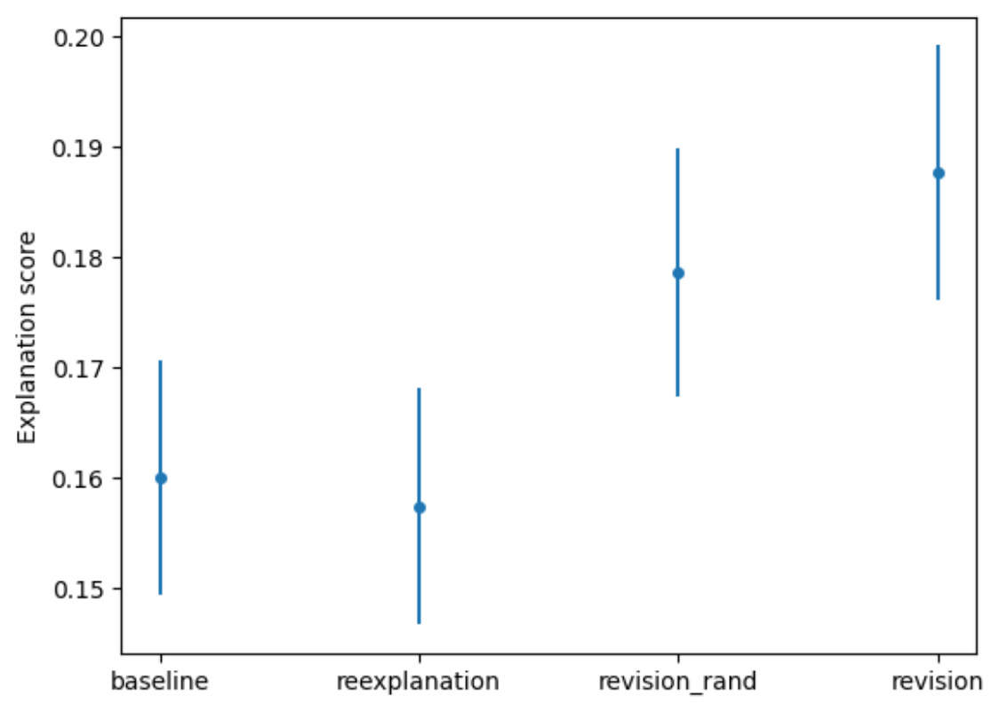
We find that revision is important: a baseline of re-explanation with the new sentences ("reexplanation") but without access to the old explanation does not improve upon the baseline. As a followup experiment, we attempted revision using a small random sample of sentences with nonzero activations ("revision_rand"). We find that this strategy improves explanation scores almost as much as revision using generated sentences. We hypothesize that this is partly because random sentences are also a good source of false positives for initial explanations: roughly 13% of random sentences contain false positive activations for the original model explanations.
Overall, revisions lets us exceed scores on the token lookup table explanations for top-and-random but not random-only scoring, for which the improvement is limited. 22
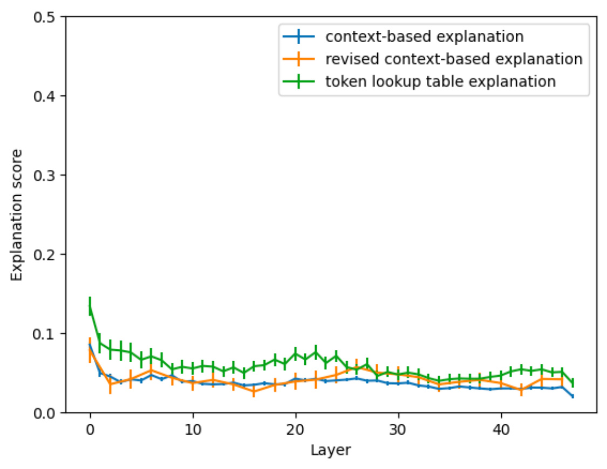
Qualitatively, the main pattern we observe is that the original explanation is too broad and the revised explanation is too narrow, but that the revised explanation is closer to the truth. For instance, for layer 0 neuron 4613 the original explanation is "words related to cardinal directions and ordinal numbers". GPT-4 generated 10 sentences based on this explanation that included many words matching this description which ultimately lacked significant activations, such as "third", "eastward", "southwest". The revised explanation is "this neuron activates for references to the ordinal number 'Fourth'", which gives far fewer false positives. Nevertheless, the revised explanation does not fully capture the neuron's behavior as there are several activations for words other than fourth, like "Netherlands" and "white".
We also observe several promising improvements enabled by revision that target problems with the original explanation technique. For instance, a common neuron activation pattern is to activate for a word but only in a very particular context. An example of this is the "hypothetical had" neuron, which activates for the word "had" but only in the context of hypotheticals or situations that might have occurred differently (e.g. "I would have shut it down forever had I the power to do so."). The original model explanation fails to pick up on this pattern and produces the overly-broad explanation, "the word 'had' and its various contexts." However, when provided with sentences containing false positive activations (e.g. "He had dinner with his friends last night") the reviser is able to pick up on the true pattern and produce a corrected explanation. Some other neuron activation patterns that the original explanation fails to capture but the revised explanation accounts for are "the word 'together' but only when preceded by the word 'get'" (e.g. "get together", "got together"), and "the word 'because' but only when part of the 'just because' grammar structure" (e.g. "just because something looks real, doesn't mean it is").
In the future, we plan on exploring different techniques for improving evidence sourcing and revision such as sourcing false negatives, applying chain of thought methods, and fine-tuning.
Explanation quality is also bottlenecked by the extent to which neurons are succinctly explainable in natural language. We found many of the neurons we inspected were polysemantic, potentially due to superposition. [26] [32] This suggests a different way to improve explanations by improving what we're explaining. We explore a simple algorithm that leverages this intuition, using our automated methodology for a possible angle of attack on superposition.
23 The high-level idea is to optimize a linear combination of neurons. Given a vector of activations a and unit vector ( θ the direction), we define a virtual neuron which has activations aθ = aT Σ−1/2 θ , where Σ is the covariance matrix of . a24
Starting with a uniformly random direction , θ we then optimize using coordinate ascent, alternating the following steps:
Explanation step: Optimize over explanations by searching for an explanation that explains aθ well (i.e achieves a high explainer score).
Update step: Optimize over θ by computing the gradient of the score and perform gradient ascent. Note that our correlation score is differentiable with respect to , θ so long as the explanation and simulated values are fixed.
For the explanation step, the simplest baseline is to simply use the typical top-activation-based explanation method (where activations are for the virtual neuron at each step). However, to improve the quality of the explanation step, we use the revisions with generated negatives, and also reuse high-scoring explanations from previous steps.
We ran this algorithm on GPT-2 small's layer 10 (the penultimate MLP layer), which has 3072 neurons. For each 3072-dimensional direction, we ran 10 rounds of coordinate ascent. For the gradient ascent we use Adam with a learning rate of 1e-2, β 1 of 0.9, and β 2 of 0.999. We also rescale θ to be unit norm each iteration.
We find that the average top-and-random score after 10 iterations is 0.718, substantially higher than the average score for random neurons in this layer (0.147), and higher than the average score for random directions before any optimization (0.061).
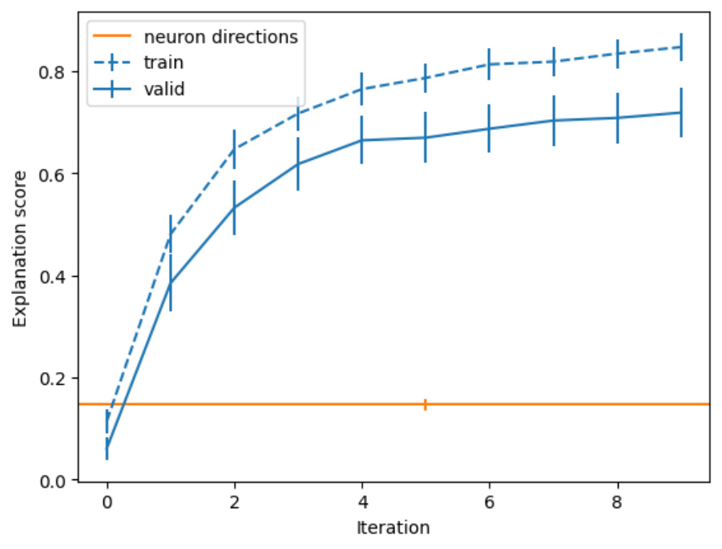
One potential problem with this procedure is that we could repeatedly converge upon the same explainable direction, rather than finding a diverse set of local maxima. To check the extent to which this is happening, we measure and find that the resulting directions have very low cosine similarity with each other.
We also inspect the neurons which contribute most to Σ−1/2 θ and qualitatively observe that they are often completely semantically unrelated, suggesting that the directions found are not just specific neurons or small combinations of semantically similar neurons. If we truncate to only the top n neurons by correlation of its activations with the direction's activations, we find that a very large number of neurons is needed to recover the score (with the explanation fixed). 25
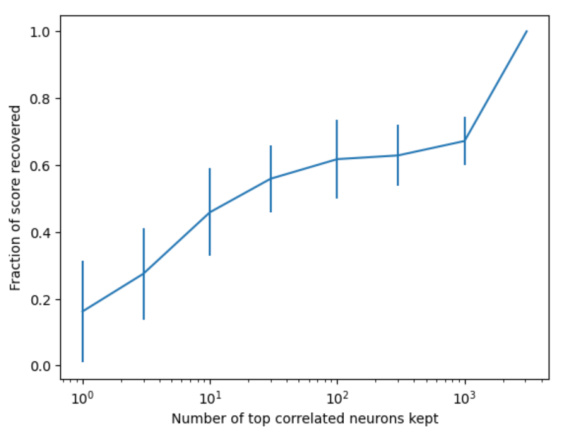
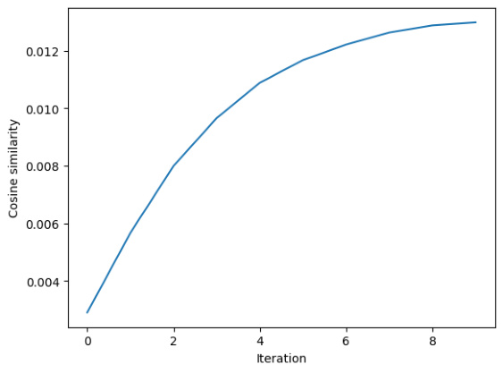
Today Considerable clouds this morning . Some decrease in clouds later in the day. A stray shower or thunderstorm i s possible. High nea 85 F . Winds SSE at 5 to 10 mph .. Tonight Partly cloudy skies. A stray shower or thunderstorm is possible. Low 71
Today Considerable clouds this morning . Some decrease i n clouds later in the day. A stray shower or thunderstorm is possible. High near 85F. Winds S SE at 5 to 10 mph. . Tonight Part ly cloudy skies . A stray shower or thunderstorm is possible. Low 71
S cattered showers and thunderstorms . A few storms may be severe . High 78F . Winds SS W at 5 to 10 mph. Chance of rain 50% .. Tonight Thunderstorms likely this evening. Then the chance of scattered thunderstorms overnight . A few storms may be severe. Low 59
Sc attered showers and thunderstorms. A few storms may be severe . High 78F. Winds SSW at 5 to 10 mph . Chance of rain 50% .. Tonight Thunderstorms likely this evening. Then the chance of scattered thunderstorms overnight. A few storms may be severe. Low 59
, IA (5 273 2) Today Rain early. . .then remaining cloudy with showers in the afternoon . Thunder possible. High 66 F. Winds light and variable . Chance of rain 80 %.. Tonight Thunderstorms likely. Low around 60F . Winds SS E at 5 to 10 mph
, IA ( 52732) Today Rain early ... then remaining cloudy with showers in the afternoon. Thunder possible. High 66F. Winds light and variable . Chance of rain 80 %.. Tonight Thunderstorms likely. Low around 60F . Winds SS E at 5 to 10 mph
, OK (74078 ) Today Cloudy early with peeks of sunshine expected late. High 79 F. Winds SSE at 5 to 10 mph .. Tonight A shower or two possible this evening with partly cloudy skies overnight. Low 57F . Winds E at 5 to 10 mph
, OK (74078) Today Cloudy early with peeks of sunshine expected late . High 79 F. Winds S SE at 5 to 10 mph .. Tonight A shower or two possible this evening with partly cloudy skies overnight. Low 57 F. Winds E at 5 to 10 mph
17801) Today A mix of clouds and sun during the morning will give way to cloudy skies this afternoon . S light chance of a rain shower . High near 65F. Winds light and variable. . Tonight Rain. Low 56F . Winds light and variable. Chance of rain 100
17801) Today A mix of clouds and sun during the morning will give way to cloudy skies this afternoon . Slight chance of a rain shower . High near 65F. Winds light and variable. . Tonight Rain. Low 56 F. Winds light and variable. Chance of rain 100
One major limitation of this method is that care must be taken when optimizing for a learned proxy of explainability. [33] [34] There may also exist theoretical limitations to the extent to which we can give faithful human understandable explanations to directions in models. [35]
One important hope is that explanations improve as our assistance gets better. Here, we experiment with different explainer models, while holding the simulator model fixed at GPT-4. We find explanations improve smoothly with explainer model capability, and improve relatively evenly across layers.
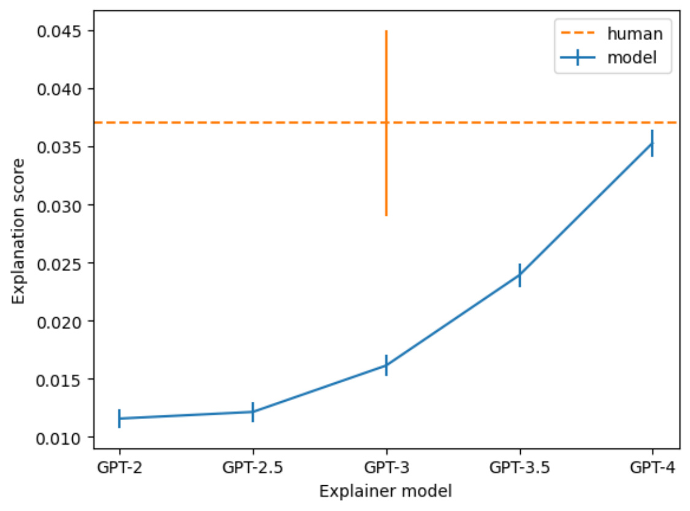
We also obtained a human baseline from labelers asked to write explanations from scratch, using the same set of 5 top-activating text excerpts that the explainer models use. Our labelers were non-experts who received instructions and a few researcher-written examples, but no deeper training about neural networks or related topics.
We see that human performance exceeds the performance of GPT-4, but not by a huge margin. Human performance is also low in absolute terms, suggesting that the main barrier to improved explanations may not simply be explainer model capabilities.
With a poor simulator, even a very good explanation will get low scores. To get some sense for simulator quality, we looked at the explanation score as a function of simulator model capability. We find steep returns on top-and-random scoring, and plateauing scores for random-only scoring.
Random Only Scoring Top And Random Scoring
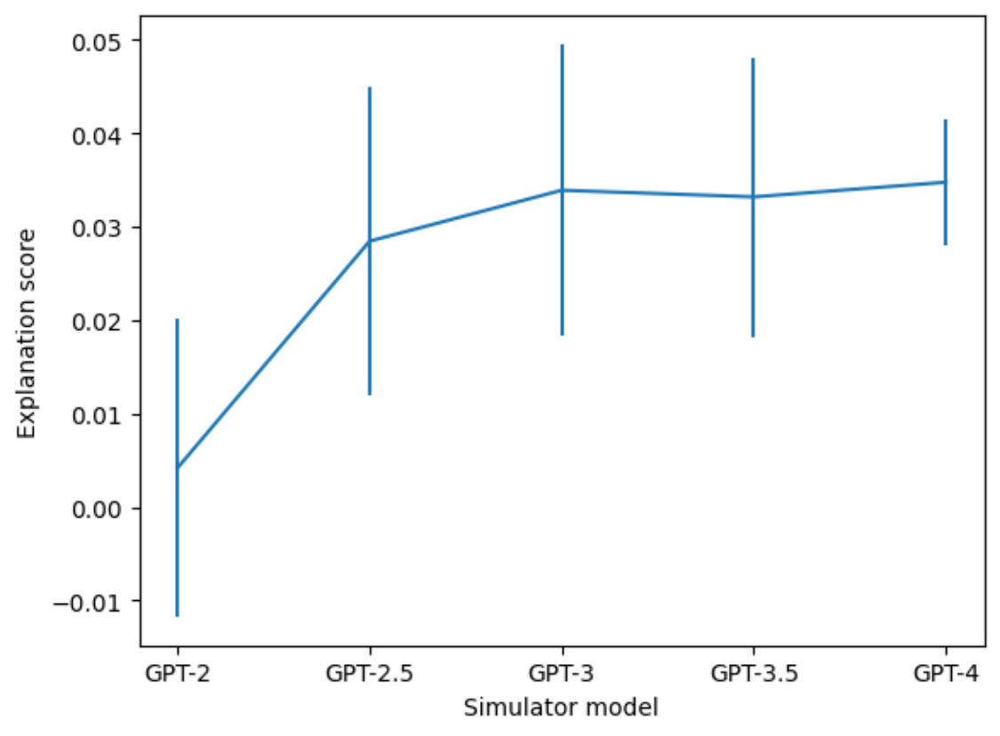
Of course, simulation quality cannot be measured using score. However, we can also verify that score-induced comparisons from larger simulators agree more with humans, using the human comparison data described earlier. Here, the human baseline comes from human-human agreement rates. Scores using GPT-4 as a simulator model are approaching, but still somewhat below, human-level agreement rates with other humans.
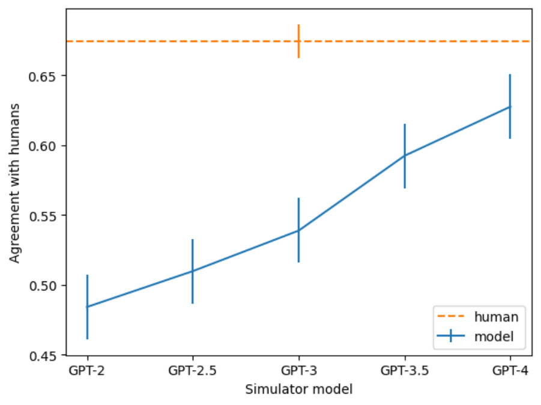
Our methodology can quickly give insight into what aspects of subject models increase or decrease explanation scores. Note that it’s possible some part of these trends reflects our particular explanation method’s strengths and weaknesses, rather than the degree to which a subject model neuron is “interpretable,” or understandable by a human with a moderate amount of effort. If our explanation methodology improved sufficiently, this approach could give insight into what aspects of models increase or decrease interpretability.
One natural question is whether larger, more capable models are more or less difficult to understand than smaller models. [36] Therefore, we measure explanation scores for subject models in the GPT-3 series, [37] ranging in size from 98K to 6.7B parameters. In general, we see a downwards trend in the explainability of neurons with increasing model size using our method, with an especially clear trend for random-only scoring.
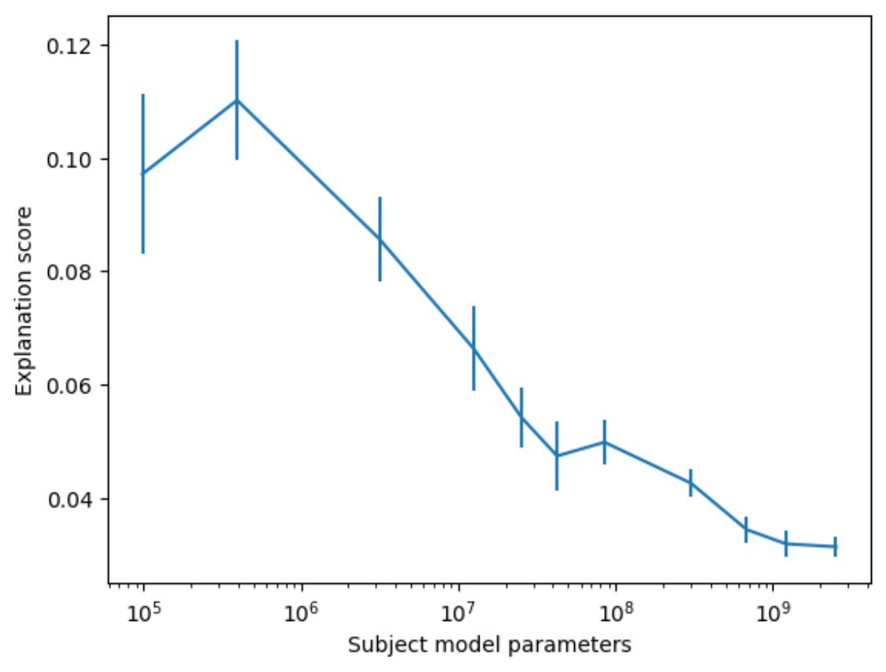
To understand the basis for this trend, we examine explainability by layer. For layer 16 onward, average explanation scores drops robustly with increasing depth, using both top-and-random and random-only scoring. For shallower layers, top-and-random scores also decrease with increasing depth, 26 while random-only scores decrease primarily with increasing model size. Because larger models have more layers, these trends together mean that explanation scores decline with increasing model size.
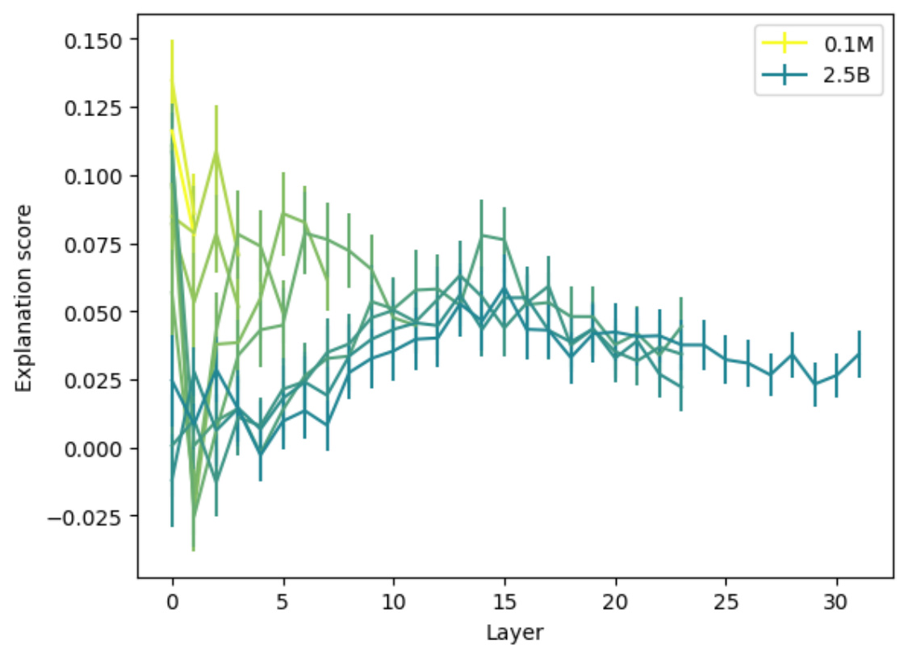
Note that these trends may be artificial, in the sense that they mostly reflect limitations of our current explanation generation technique. Our experiments on "next token"-based explanation lend credence to the hypothesis that later layers of larger models have neurons whose behavior is understandable but difficult for our current methods to explain.
One interesting question is whether the architecture of a model affects its interpretability, [38] [39] [12] especially with respect to the model’s sparsity. [40] [41] To study this, we train some small (~3M parameter) models from scratch using a sparse activation function, which applies a standard activation function but then only keeps a fixed number of top activations in each layer, setting the rest to zero. We try this for different levels of activation density: 1 (the baseline), 0.1, 0.01, and 0.001 (top 2 neurons). Our hope is that activation sparsity should discourage extreme polysemanticity.
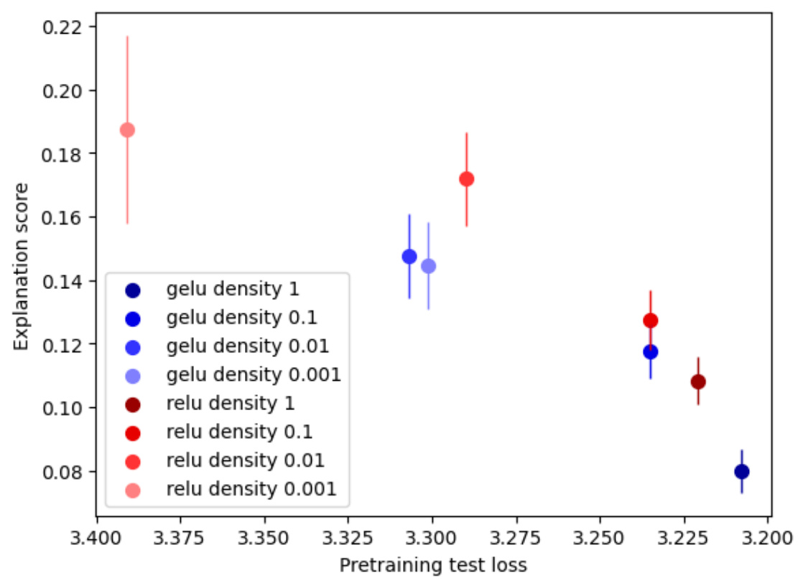
Increasing activation sparsity consistently increases explanation scores, but hurts pre-training loss. 27 We also find that RELU consistently yields better explanation scores than GeLU.
Another question is how training time affects explanation scores for a fixed model architecture. To study this, we look at explanation scores for intermediate checkpoints of models in the GPT-3 series corresponding to one half and one quarter of the way through training. 28
Random Only Scoring Top And Random Scoring
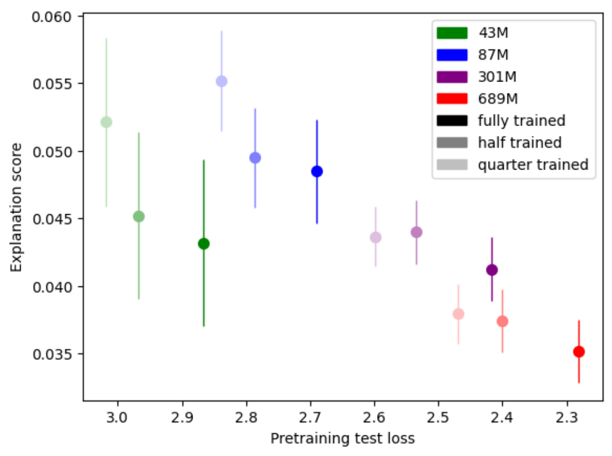
Training more tends to improve top-and-random scores but decrease random-only scores. 29 At a fixed level of performance on loss, smaller models perhaps tend to have higher explanation scores.
We also find significant positive transfer for explanations between different checkpoints of the same training run. For example, scores for a quarter-trained model seem to drop by less than 25% when using explanations for a fully-trained model, and vice versa. This suggests a relatively high degree of stability in feature-neuron correspondence.
Throughout the project we found many interesting neurons. GPT-4 was able to find explanations for non-trivial neurons that we thought were reasonable upon inspection, such as a "simile" neuron, a neuron for phrases related to certainty and confidence, and a neuron for things done correctly.
One successful strategy for finding interesting neurons was looking for those which were poorly explained by their token-space explanations, compared with their activation-based explanations. This led us to concurrently discover context neurons [32] which activate densely in certain contexts 30 and many neurons which activated on specific words at the beginning of documents.
Another related strategy that does not rely on explanation quality was to look for context-sensitive neurons that activate differently when the context is truncated. This led us to discover a pattern break neuron which activates for tokens that break an established pattern in an ongoing list (shown below on some select sentences) and a post-typo neuron which activates often following strange or truncated words. Our explanation model is generally unable to get the correct explanation on interesting context-sensitive neurons.
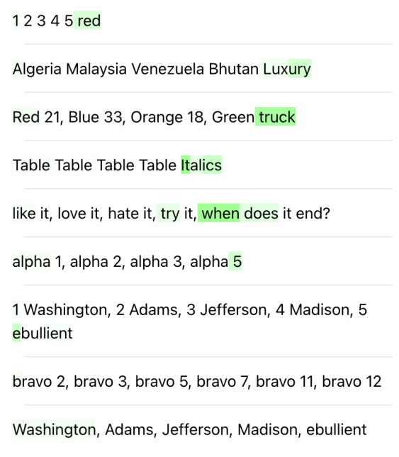
We noticed a number of neurons that appear to activate in situations that match a particular next token, for example a neuron that activates where the next token is likely to be the word “from”. Initially we hypothesized that these neurons might be making a prediction of the next token based on other signals. However, ablations on some of these neurons do not match this story. The “from” neuron appears to actually slightly decrease the probability of “from” being output. At the same time it increases the probability of variations of the word “form”, suggesting one of the things it is doing is accounting for the possibility of a typo. As it is in a late layer (44 out of 48), this neuron may be responding to situations where the network already places high probability on the word “from”. We have not investigated enough to have a clear picture of what is going on, but it is possible that many neurons encode particular subtle variations on the output distribution conditioned on a particular input rather than performing the obvious function suggested by their activations.
We found some interesting examples of neurons that respond to specific kinds of repetition. We found a neuron that activations for repeated occurrences of tokens, with stronger activations depending on the number of occurrences. An interesting example of a polysemantic neuron is a neuron that fires for both the phrase "over and over again" and “things repeated right before a non-repeated number”, possibly because “over and over again” itself includes repetition. We also found two neurons that seem mostly to respond to a second mention of a surname when combined with a different first name. It is possible that these neurons are responding to induction heads. [42]
Overall, our subjective sense was that neurons for more capable models tended to be more interesting, although we spent the majority of our efforts looking at GPT-2 XL neurons rather than more modern models.
For more interesting neurons, see our neuron visualization website.
When thinking about how to qualitatively understand our explanation methodology, we often ran into two problems. First, we do not have any ground truth for the explanations or scores. Even human-written explanations could be incorrect, or at the very least fail to completely explain the behavior. Furthermore, it is often difficult to tell whether a better explanation exists. Second, we have no control over the complexity or types of patterns neurons encode, and no guarantee that any simple explanation exists.
To address these drawbacks, we created "neuron puzzles": synthetic neurons with human-written explanations and curated evidence. To create a neuron puzzle, we start with a human-written explanation, taken to be ground truth. Next, we gather text excerpts and manually label their tokens with "activations" (not corresponding to the activations of any real network, because these are synthetic neurons) according to the explanation. Thus, each puzzle is formed from an explanation and evidence supporting that explanation (i.e. a set of text excerpts with activations).
To evaluate the explainer, we provide the tokens and synthetic activations to the explainer and observe whether the model-generated explanation matches the original puzzle explanation. We can vary puzzle difficulty and write new puzzles to test for certain patterns that interest us. Thus, a collection of these puzzles form a useful evaluation for iterating on our explainer technique. We created a total of 19 puzzles, many inspired by neurons we and other found, including a puzzle based on the "not all" neuron described earlier and the 'an' prediction neuron in GPT-2 Large. [43]
Puzzle examples:
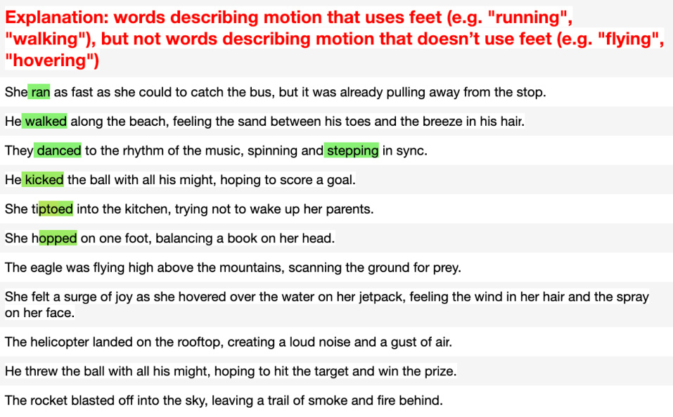
For each puzzle, we ensured that the evidence is sufficient for a human to recover the original explanation. 31 However, one can imagine creating puzzles that humans generally cannot solve in order to evaluate a superhuman explainer technique. Our baseline explainer methodology can solve 5 of the 19 puzzles. While it is skilled at picking out broad patterns in the tokens with high activations, it consistently fails to consider tokens in context or apply foundational knowledge. The explainer is also poor at incorporating negative evidence into its explanations. For instance, for the "incorrect historical years" puzzle the explainer recognizes that the neuron is activating for numerical years but fails to incorporate evidence of numerical years in the provided text excerpts where the neuron does not activate. These failure cases motivate our experiments with revisions. Indeed, when we apply our revision technique to the puzzles we solve an additional 4.
These neuron puzzles also provide a weak signal about whether the scorer is an effective discriminator between proposed explanations for more complex neurons than the ones we have currently found. We created a multiple-choice version for each puzzle by writing a series of false explanations. For example, "this neuron responds to important years in American or European history" was a false explanation for the "incorrect historical years" puzzle. One of the false explanations is always a baseline of the three most common tokens with high activations. For each puzzle, we score the ground-truth explanation and all of the false explanations on the sequences and activations for that puzzle and then record the number of times that the ground-truth explanation has the highest score. For 16/19 puzzles, the ground-truth explanation is ranked highest, and for 18/19 the ground-truth explanation ranks in the top two. Compared with the 5/19 puzzles that the explainer solves, this evaluation suggested to us that the explainer is currently more of a bottleneck than the scorer. This may reflect the fact that detecting a pattern is more difficult than verifying a pattern given an explanation.
Nevertheless, the simulator also suffers from systematic errors. While it performs well at simulating patterns that only require looking at isolated tokens (e.g. "words related to Canada"), it often has difficulty simulating patterns involving positional information as well as patterns that involve precisely keeping track of some quantity. For instance, when simulating the "an" neuron ("this neuron activates for positions in the sentence which are likely to be followed by the word "an"), the results include very high numbers of false positives.
We are releasing code for trying out the neuron puzzles we constructed.
Our method has a number of limitations which we hope can be addressed in future work.
Our work assumes that neuron behavior can be summarized by a short natural language explanation. This assumption could be problematic for a number of reasons.
Past research has suggested that neurons may not be privileged as a unit of computation. [44] In particular, there may be polysemantic neurons which correspond to multiple semantic concepts. [25] [26] While our explanation technique can and often does generate explanations along the lines of "X and sometimes Y", it is not suited to capturing complex instances of polysemanticity.
Analyzing top-activating dataset examples has proved useful in practice in previous work [45] [12] but also potentially results in the illusion of interpretability. [46] By focusing on top activations, our intention was to focus the model on the most important aspects of the neuron's behavior at extremal activation values, but not at lower percentiles, where the neuron may behave differently.
One approach to reducing or working around polysemanticity we did not explore is to apply some factorization to the neuron space [47] , such as NMF, [48] [49] SVD, [50] [51] or dictionary learning. [52] We believe this could be complementary with direction finding and training interpretable models.
Furthermore, language models may represent alien concepts that humans don't have words for. This could happen because language models care about different things, e.g. statistical constructs useful for next-token prediction tasks, or because the model has discovered natural abstractions that humans have yet to discover, e.g. some family of analogous concepts in disparate domains.
We currently explain correlations between the network input and the neuron being interpreted on a fixed distribution. Past work has suggested that this may not reflect the causal behavior between the two. [53] [45]
Our explanations also do not explain what causes behavior at a mechanistic level, which could cause our understanding to generalize incorrectly. To predict rare or out-of-distribution model behaviors, it seems possible that we will need a more mechanistic understanding of models.
Our scoring methodology relies on the simulator model faithfully replicating how an idealized human would respond to an explanation. However, in practice, the simulator model could be picking up on aspects of an explanation that a human would not pick up on. In the worst case, the explainer model and simulator model could be implicitly performing some sort of steganography [54] with their explanations. This could happen, for example, if both the explainer and simulator model conflate the same spurious feature with the actual feature (so the subject could be responding to feature X, and the explainer would falsely say Y, but the simulations might happen to be high on X).
Ideally, one could mitigate this by training the simulator model to imitate human simulation labels. We plan to visit this in future work. This may also improve our simulation quality and simplify how we prompt the model.
To understand transformer models more fully we will need to move from interpreting single neurons to interpreting circuits. [25] [1] [10] [55] This would mean including hypotheses about downstream effects of neurons, hypotheses about attention heads and logits, and hypotheses involving multiple inputs and outputs.
Eventually, our explainer models would draw from a rich space of hypotheses, just like interpretability researchers do.
Our methodology is quite compute-intensive. The number of activations in the subject model (neurons, attention head dimensions, residual dimensions) scales roughly as O ( n 2/3) , where n is the number of subject model parameters. If we use a constant number of forward passes to interpret each activation, then in the case where the subject and explainer model are the same size, overall compute scales as O ( n 5/3) . On the other hand, this is perhaps favorable compared to pre-training itself. If pre-training scales data 2 approximately linearly with parameters, [56] then it uses compute O ( n ) .
Another computational issue is with context length. Our current method requires the explainer model to have context at least twice as long as the text excerpts passed to the subject model. This means that if the explainer model and subject model had the same context length, we would only be able to explain the subject model's behavior within at most half of its full context length, and could thus fail to capture some behavior that only manifests at later tokens.
There are a few ways tokenization causes issues for our methodology:
The explainer and subject models may use different tokenization schemes. The tokens in the activation dataset are from inference on the subject model and will use that model's tokenization scheme. When the associated strings appear in the prompt sent to the explainer model, they may be split into multiple tokens, or they may be partial tokens that wouldn't naturally appear in the given text excerpt for the explainer model.
We use a byte pair encoder, so when feeding tokens one by one to a model, sometimes the token cannot be shown sensibly as characters. We assumed decoding the individual token is meaningful, but this isn't always the case. In principle, when the subject and explainer model have the same encoding, we could have used the correct token, but we neglected to do that in this work.
We use delimiters between tokens and their corresponding activations. Ideally, the explainer model would see each of tokens, delimiters, and activations as separate tokens. However, we cannot guarantee they don't merge, and in fact our tab delimiters merge with newline tokens, likely making the assistant's task harder.
To the extent that these tokenization quirks affect the model's understanding of which tokens appeared in the original text excerpt, they could harm the quality of our explanations and simulations.
While we have described a number of limitations with the current version of our methods, we believe our work can be greatly improved and effectively integrated with other existing approaches. For example, successful research on polysemanticity could immediately cause our methods to yield much higher scores. Conversely, our methods could help improve our understanding of superposition by trying to find multiple explanations that cover behavior of a neuron over its entire distribution, or by optimizing to find sets of interpretable directions in the residual stream (perhaps in combination with approaches like dictionary learning). We also hope that we can integrate a wider range of common interpretability techniques, such as studying attention heads, using ablations for validation, etc. into our automated methodology.
Improvements to chain-of-thought methods, tool use, and conversational assistants can also be used to improve explanations. In the long run, we envision that the explainer model could generate, test, and iterate on a rich space of hypotheses about the subject model, similar to an interpretability researcher today. This would include hypotheses about the functionality of circuits and about out-of-distribution behaviors. The explainer model's environment could include access to tools like code execution, subject model visualizations, and talking to researchers. Such a model could be trained using expert iteration or reinforcement learning, with a simulator/judge model setting rewards. We can also train via debate, where two competing assistant models both propose explanations and critique each other's explanations.
We believe our methods could begin contributing to understanding the high-level picture of what is going on inside transformer language models. User interfaces with access to databases of explanations could enable a more macro-focused approach that could help researchers visualize thousands or millions of neurons to see high-level patterns across them. We may be able to soon make progress on simple applications like detecting salient features in reward models, or understanding qualitative changes between a fine-tuned model and its base model.
Ultimately, we would like to be able to use automated interpretability to assist in audits [3] of language models, where we would attempt to detect and understand when the model is misaligned. Particularly important is detecting examples of goal misgeneralization or deceptive alignment, [57] [58] [59] when the model acts aligned when being evaluated but would pursue different goals during deployment. This would require a very thorough understanding of every internal behavior. There could also be complications in using powerful models for assistance if we don't know whether the assistant itself is trustworthy. We hope that using smaller trustworthy models for assistance will either scale to a full interpretability audit, or applying them to interpretability will teach us enough about how models work to help us develop more robust auditing methods.
This work represents a concrete instance of OpenAI's broader alignment plan of using powerful models to help alignment researchers. [60] We hope it is a first step in scaling interpretability to a comprehensive understanding of more complicated and capable models in the future.
Methodology: Nick effectively started the project by having the initial idea to have GPT-4 explain neurons, and showing a simple explanation methodology worked. William came up with the initial simulation and scoring methodology and implementation. Dan and Steven ran many experiments resulting in ultimate choices of prompts and explanation/scoring parameters.
ML infrastructure: William and Nick set up the initial version of the codebase. Leo and Jeff implemented the initial core internal infrastructure for doing interpretability. Steven implemented the top activations pipeline. Steven and William developed the pipeline for explanations and scoring. Many other miscellaneous contributions came from William, Jeff, Dan, and Steven. Steven created the open source version.
Web infrastructure: Nick and William implemented the neuron viewer, with smaller contributions from Steven, Dan, and Jeff. Nick implemented many other UIs exploring various kinds of neuron explanation. Steven implemented human data gathering UIs.
Human data: Steven implemented and analyzed all experiments involving contractor human data: the human explanation baseline, and human scoring experiments. Nick and William implemented early researcher explanation baselines.
Alternative token and weight-based explanations: Dan implemented all experiments and analysis on token weight and token lookup baselines, next token explanations, as well as infrastructure and UIs for neuron-neuron connection weights.
Revisions: Henk implemented and analyzed the main revision experiments. Nick championed and implemented an initial proof of concept for revisions. Leo implemented a small scale derisking experiment. Steven helped design the final revision pipeline. Leo and Dan did many crucial investigations into negative finding.
Direction finding: Leo had the idea and implementated all experiments related to direction finding.
Neuron puzzles: Henk implemented all the neuron puzzles and related experiments. William came up with the initial idea. Steven and William gave feedback on data and strategies.
Subject, explainer, and simulator scaling: Steven implemented and analyzed assistant size, simulator size, and subject size experiments. Jeff implemented and analyzed subject training time experiments.
Ablation scoring: Jeff implemented ablation infrastructure and initial scoring experiments, and Dan contributed lots of useful thinking and carried out final experiments. Leo did related investigations into understanding and prediction of ablation effects.
Activation function experiments: Jeff implemented the experiments and analysis. Gabe suggested the sparse activation function, and William suggested correlation-based community detection.
Qualitative results: Everyone contributed throughout the project to qualitative findings. Nick and William discovered many of the earliest nontrivial neurons. Dan found many non-trivial neurons by comparing to token baselines, such as simile neurons. Steven found the pattern break neuron, and other context-sensitive neurons. Leo discovered the "don't stop" neuron and first noticed explanations were overly broad. Henk had many qualitative findings about explanation and scoring quality. Nick found interesting neuron-neuron connections and interesting pairs of neurons firing on the same token. William and Jeff investigated ablations of specific neurons.
Guidance and mentorship: William and Jeff led and managed the project. Jan and Jeff managed team members who worked on the project. Many ideas from Jan, Nick, William, and Ilya influenced the direction of the project. Steven mentored Henk.
We thank Neel Nanda, Ryan Greenblatt, Paul Christiano, Chris Olah, and Evan Hubinger for useful discussions on direction during the project.
We thank Ryan Greenblatt, Buck Shlegeris, Trenton Bricken, the OpenAI Alignment team, and the Anthropic Interpretability team for useful discussions and feedback.
We thank Cathy Yeh for doing useful checks of our code and noticing tokenization concerns.
We thank Carroll Wainwright and Chris Hesse for help with infrastructure.
We thank the contractors who wrote and evaluated explanations for our human data experiments, and Long Ouyang for some feedback on our instructions.
We thank Rajan Troll for providing a human baseline for the neuron puzzles.
We thank Thomas Degry for the blog graphic.
We thank other OpenAI teams for their support, including the supercomputing, research acceleration, and language teams.
Please cite as:
Bills, et al., "Language models can explain neurons in language models", 2023.
@misc{bills2023language,
title={Language models can explain neurons in language models},
author={
Bills, Steven and Cammarata, Nick and Mossing, Dan and Tillman, Henk and Gao, Leo and Goh, Gabriel and
Sutskever, Ilya and Leike, Jan and Wu, Jeff and Saunders, William
},
year={2023},
howpublished = {\url{https://openaipublic.blob.core.windows.net/neuron-explainer/paper/index.html}}
}
The subject and the explainer can be the same model, though for our experiments we typically use smaller models as subjects and our strongest model as the explainer. In the long run, the situation may be reversed if the subject is our strongest model but we don't trust it as an assistant. [ ↩ ]
Thus, while the explainer model should be trained to be as helpful as possible using RL (using the simulator model as a training signal), the simulator should be trained to imitate humans. If the simulator model improved its performance by making predictions that humans would disagree with, we would potentially risk explanations not being human-understandable. [ ↩ ]
However, we did not explicitly check that the resulting text excerpts do not overlap. While in principle it would be reasonable for an explanation to "memorize" behavior to the extent that it drives most of the subject model's behavior on the training set, it would be less interesting if that was the primary driver of high scores. Based on some simple checks of our text excerpts, this was a non-issue for at least 99.8% of neurons. [ ↩ ]
All prompts are shown in an abbreviated format, and are modified somewhat when using the structured chat completions API. For full details see our codebase. [ ↩ ]
While we used GPT-4 as the simulator model for most of our experiments, the public OpenAI API does not support returning logprobs for newer chat-based models like GPT-4 and GPT-3.5-turbo. Older models like the original GPT-3.5 support logprobs. [ ↩ ]
"All at once" actually outperformed "one at a time", but the effect was within noise, and researchers subjectively thought "one at a time" was better, on relatively small sample sizes. [ ↩ ]
Note that this isn't an unbiased estimator of true explained variance, since we also use a sample for the denominator. One could improve on our approach by using a much larger sample for estimating the variance term. [ ↩ ]
We explored more complicated methods to calibrate, but they typically require many simulations, which are expensive to obtain [ ↩ ]
Conceptually, calibration should ideally happen on a different set of text excerpts, so we aren't "cheating" by using the true mean and variance. We empirically studied this cheating effect for differing sample sizes and believe it to be small in practice. [ ↩ ]
Matching standard deviations results in explained variance of 2 ρ −1 < ρ2 . We also find empirically that it performs worse in ablation based scoring. [ ↩ ]
This might happen if subtle variations in the activation of a neuron (making the difference, say, between a correlation score of 0.9 and 1.0) played an outsized role in its function within the network. [ ↩ ]
Unlike GPT-2, GPT-4 is a model trained to follow instructions via RLHF. [23] [ ↩ ]
Note that since GPT-2 models use byte-pair encoders, sometimes our texts have mid-character breaks. See here for more discussion. [ ↩ ]
GPT-2 was trained to sometimes see multiple documents, separated by a special end of text token. In our work, we ensure all 64 tokens are within the same document. [ ↩ ]
For other activation functions like GeGLU, [24] this would likely be untrue and we would need to separately explain positive and negative activations. [ ↩ ]
In the long term, we want to move toward something debate-like [27] where the score is more like a minimax than an expectation. That is, we imagine one model coming up with an explanation and another model coming up with counterexamples. Scoring would take the whole transcript into consideration, and thus measure how robust the hypothesis is. [ ↩ ]
Unfortunately, initial attempts at this using a moderate increase in number of text excerpts did not prove to be useful. [ ↩ ]
In most places, we calculate this using 1.96 times the standard error of the mean (SEM), or a strictly more conservative statistic. If needed we estimate via bootstrap resampling methods. [ ↩ ]
We also tried linear prediction including the position embedding for each position in the text excerpt plus the token embedding; this linear token- and position-based prediction baseline resulted in very small quantitative improvements and no qualitative change. [ ↩ ]
As noted above, in the non-iterative setting we find the explainer model is unable to effectively make use of additional text excerpts in context. [ ↩ ]
When one of us looked uncarefully at this neuron, we too came to this conclusion. It was only after testing examples of sequences like "All students must turn in their final papers by Monday" that we realized the initial explanation was too broad. [ ↩ ]
Our revision process is also agnostic to the explanation it starts with, so we could likely also start from our strong unigram baselines and revise based on relevant sentences. We suspect this will outperform our existing results and plan to try techniques like this in the future. [ ↩ ]
This method can also be applied to the residual stream, because it does not assume a privileged basis at all. [ ↩ ]
We found in early experiments that without reparameterization by Σ−1/2 , high-variance neurons would otherwise disproportionately dominate the selected vectors, causing a reduction in sample diversity. The reparameterization using Σ−1/2 ensures that the initialization favors lower-variance directions and that step sizes are scaled appropriately. Despite the reparameterization, we still observe some amount of collapse. [ ↩ ]
We also tried truncating based on magnitude of coefficient, which resulted in even poorer scores. [ ↩ ]
However, we find the second layer (layer 1) of many large models to have very low scores, potentially related to the fact that they contain many dead neurons. [ ↩ ]
Each parameter doubling is approximately 0.17 nats of loss, so the 0.1 sparsity models are roughly 8.5% less parameter-efficient, and 0.01 sparsity models are roughly 40% less parameter-efficient. We hope there is low hanging fruit for reducing this "explainability tax". [ ↩ ]
Each of these models was trained for a total of 300B tokens. [ ↩ ]
One extremely speculative explanation for this is that features get cleaner/better with more training (causing random-and-top scores to increase) but that there are also more interfering features due to superposition (causing random-only scores to decrease) [ ↩ ]
We called these "vibe" neurons. [ ↩ ]
When we gave these puzzles to a researcher not on the project, they solved all but the 'an' prediction puzzle. In hindsight, they thought they could recognize future next-token-predicting puzzles with similar levels of evidence. [ ↩ ]
Wang, K., Variengien, A., Conmy, A., Shlegeris, B. and Steinhardt, J., 2022. arXiv preprint arXiv:2211.00593.
Zhong, R., Snell, C., Klein, D. and Steinhardt, J., 2022. International Conference on Machine Learning, pp. 27099--27116.
OpenAI,, 2023. arXiv preprint arXiv:2303.08774.
Bau, D., Zhou, B., Khosla, A., Oliva, A. and Torralba, A., 2017. Proceedings of the IEEE conference on computer vision and pattern recognition, pp. 6541--6549.
Elhage, N., Hume, T., Olsson, C., Nanda, N., Henighan, T., Johnston, S., ElShowk, S., Joseph, N., DasSarma, N., Mann, B., Hernandez, D., Askell, A., Ndousse, K., Jones, A., Drain, D., Chen, A., Bai, Y., Ganguli, D., Lovitt, L., Hatfield-Dodds, Z., Kernion, J., Conerly, T., Kravec, S., Fort, S., Kadavath, S., Jacobson, J., Tran-Johnson, E., Kaplan, J., Clark, J., Brown, T., McCandlish, S., Amodei, D. and Olah, C., 2022. Transformer Circuits Thread.
Radford, A., Wu, J., Child, R., Luan, D., Amodei, D., Sutskever, I. and others,, 2019. OpenAI blog, Vol 1(8), pp. 9.
Carter, S., Armstrong, Z., Schubert, L., Johnson, I. and Olah, C., 2019. Distill, Vol 4(3), pp. e15.
Tenney, I., Wexler, J., Bastings, J., Bolukbasi, T., Coenen, A., Gehrmann, S., Jiang, E., Pushkarna, M., Radebaugh, C., Reif, E. and others,, 2020. arXiv preprint arXiv:2008.05122.
Nanda, N..
Erhan, D., Bengio, Y., Courville, A. and Vincent, P., 2009. University of Montreal, Vol 1341(3), pp. 1.
Yosinski, J., Clune, J., Nguyen, A., Fuchs, T. and Lipson, H., 2015. arXiv preprint arXiv:1506.06579.
Olah, C., Mordvintsev, A. and Schubert, L., 2017. Distill. DOI: 10.23915/distill.00007
Hendrycks, D. and Gimpel, K., 2016. arXiv preprint arXiv:1606.08415.
Shazeer, N., 2020. arXiv preprint arXiv:2002.05202.
Olah, C., Cammarata, N., Schubert, L., Goh, G., Petrov, M. and Carter, S., 2020. Distill. DOI: 10.23915/distill.00024.001
Elhage, N., Hume, T., Olsson, C., Schiefer, N., Henighan, T., Kravec, S., Hatfield-Dodds, Z., Lasenby, R., Drain, D., Chen, C., Grosse, R., McCandlish, S., Kaplan, J., Amodei, D., Wattenberg, M. and Olah, C., 2022. Transformer Circuits Thread.
Irving, G., Christiano, P. and Amodei, D., 2018. arXiv preprint arXiv:1805.00899.
nostalgebraist,, 2020.
Dar, G., Geva, M., Gupta, A. and Berant, J., 2022. arXiv preprint arXiv:2209.02535.
Wei, J., Wang, X., Schuurmans, D., Bosma, M., Chi, E., Le, Q. and Zhou, D., 2022. arXiv preprint arXiv:2201.11903.
Saunders, W., Yeh, C., Wu, J., Bills, S., Ouyang, L., Ward, J. and Leike, J., 2022. arXiv preprint arXiv:2206.05802.
Gurnee, W., Nanda, N., Pauly, M., Harvey, K., Troitskii, D. and Bertsimas, D., 2023. arXiv preprint arXiv:2305.01610.
Goodhart, C., 1975. Monetary Economics, Vol 1.
Gao, L., Schulman, J. and Hilton, J., 2022.
Christiano, P., Cotra, A. and Xu, M., 2021.
Hubinger, E., 2019.
Brown, T., Mann, B., Ryder, N., Subbiah, M., Kaplan, J.D., Dhariwal, P., Neelakantan, A., Shyam, P., Sastry, G., Askell, A. and others,, 2020. Advances in neural information processing systems, Vol 33, pp. 1877--1901.
Gonzalez, C., Loza Menc{'\i}a, E. and Furnkranz, J., 2017. Discovery Science: 20th International Conference, DS 2017, Kyoto, Japan, October 15--17, 2017, Proceedings 20, pp. 127--143.
Subramanian, A., Pruthi, D., Jhamtani, H., Berg-Kirkpatrick, T. and Hovy, E., 2018. Proceedings of the AAAI conference on artificial intelligence, Vol 32(1).
Murphy, B., Talukdar, P. and Mitchell, T., 2012. Proceedings of COLING 2012, pp. 1933--1950.
Olsson, C., Elhage, N., Nanda, N., Joseph, N., DasSarma, N., Henighan, T., Mann, B., Askell, A., Bai, Y., Chen, A., Conerly, T., Drain, D., Ganguli, D., Hatfield-Dodds, Z., Hernandez, D., Johnston, S., Jones, A., Kernion, J., Lovitt, L., Ndousse, K., Amodei, D., Brown, T., Clark, J., Kaplan, J., McCandlish, S. and Olah, C., 2022. Transformer Circuits Thread.
Miller, J. and Neo, C., 2023.
Cammarata, N., Goh, G., Carter, S., Schubert, L., Petrov, M. and Olah, C., 2020. Distill. DOI: 10.23915/distill.00024.003
Lee, D.D. and Seung, H.S., 1999. Nature, Vol 401(6755), pp. 788--791. Nature Publishing Group UK London.
Chu, C., Zhmoginov, A. and Sandler, M., 2017. arXiv preprint arXiv:1712.02950.
Hoffmann, J., Borgeaud, S., Mensch, A., Buchatskaya, E., Cai, T., Rutherford, E., Casas, D.d.L., Hendricks, L.A., Welbl, J., Clark, A. and others,, 2022. arXiv preprint arXiv:2203.15556.
Ngo, R., Chan, L. and Mindermann, S., 2023.
Leike, J., Schulman, J. and Wu, J., 2022.
← 13 Composition & Superposition · Contents · 15 Finding Neurons in a Haystack →